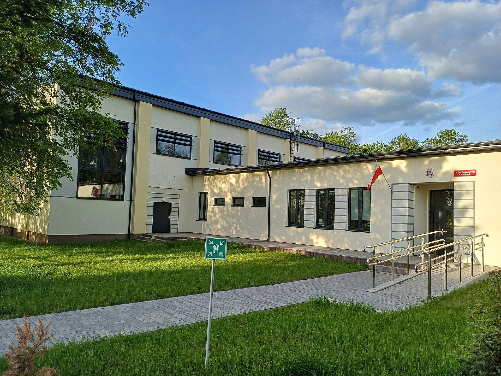

Wróć do listy realizacji
Rozbudowa Szkoły Podstawowej w Piekarach, Gmina Mszczonów
Obiekty oświatowe i edukacyjne, 2022–2023, zakończona

- Rozbudowana Szkoła Podstawowa w Piekarach, widok od strony boiska, kwiecień 2025. Fot. Botev, Wikimedia Commons, licencja CC BY-SA 4.0.
- Wejście do Szkoły Podstawowej w Piekarach z pochylnią, kwiecień 2025. Fot. Botev, Wikimedia Commons, licencja CC BY-SA 4.0.
Opis realizacji
Dla Gminy Mszczonów rozbudowaliśmy Szkołę Podstawową w Piekarach. Po reformie oświaty szkoła stała się placówką ośmioklasową i potrzebowała więcej miejsca. W nowej części powstały sale lekcyjne, sala gimnastyczna, gabinet pomocy przedmedycznej, pokój nauczycielski oraz toalety dostosowane do potrzeb osób z niepełnosprawnościami. Szkoła uczy dziś ok. 180 uczniów w 10 oddziałach.
Publikacje o inwestycji
- Artykuł z czerwca 2023 r. opisuje zakres rozbudowy i jej powody (reforma, szkoła ośmioklasowa). Prace wznowiono w kwietniu 2022 r., a zakończenie zaplanowano na listopad 2023 r. (eGłos Żyrardów)
- W roku szkolnym 2025/2026 szkoła ma 10 oddziałów i 182 uczniów (Rada Miejska w Mszczonowie)